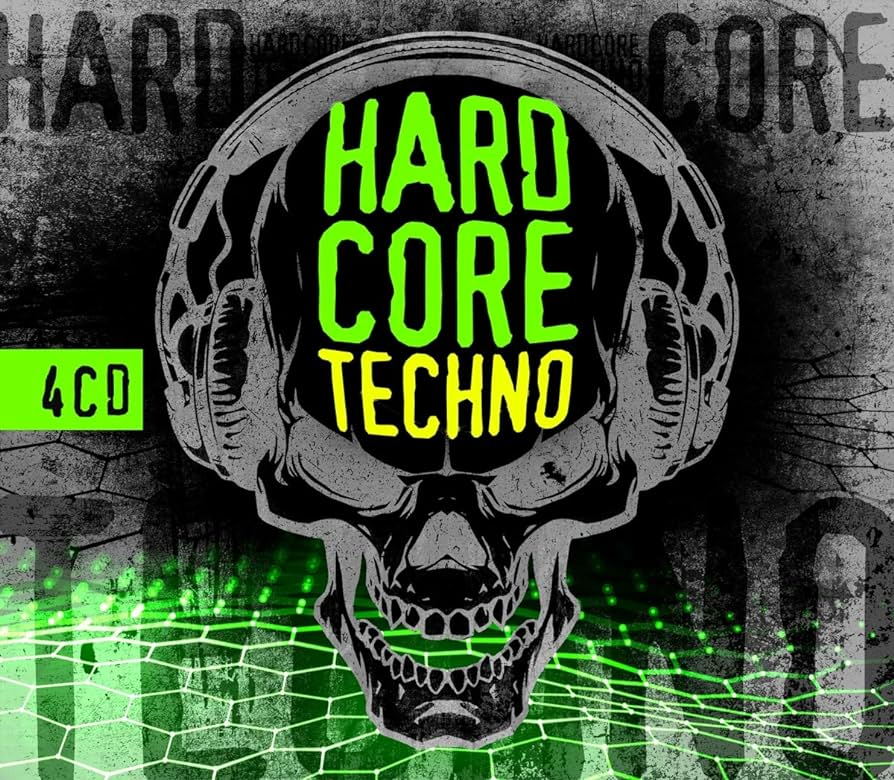

en esta parte de la pagina se dara una breve explicacion sobre cada subgenero que conforma la musica electronica,
electronica
La música electrónica, padre de estos subgéneros, surgió a mediados de los años 1960 como un género musical reconocible por su forma.
Esta reproducción eléctrica de instrumentos musicales se logra mediante sintetizadores y otros dispositivos electrónicos.
Este género tiene su origen en la música cultural occidental, es popular y mezcla diferentes tipos de géneros, no es excluyente.
Como cada instrumento está sintetizado según el sonido del género, es amplio en el sentido de que utiliza diferentes tipos de letras, alegría,
Tristeza, euforia, etc. Dado que sus géneros son formas híbridas con otros géneros existentes y, por tanto, a menudo experimentales, deja un amplio campo para sus subgéneros.
Por supuesto, todo en este género en particular está hecho con un sonido más eléctrico, de ahí el nombre.
EDM
En este género se explicará el dance y el EDM porque son un género portátil y por lo tanto
Son demasiado similares entre sí, una mezcla de diferentes tipos de géneros.
Estos pueden ser: rock, metal, subgéneros electrónicos como house, trance, etc. Esta música apareció a principios de los años 80 y era conocida como música disco,
Emocionante bailar, gracias a la sencillez de su estructura y la velocidad del ritmo, es lo principal.
Cruciales para el éxito del subgénero, estas composiciones musicales suelen tener un acompañamiento en determinados momentos.
Con textos pegajosos. El género encaja perfectamente en el ambiente de club que lo hace tan famoso hoy en día.
drum
el drum es una mezcla de subgéneros del funk con canciones que también tienen ritmos de bajo.
Estos ritmos acelerados derivados del funk se denominaron breaks y el subgénero surgió de sus orígenes.
A partir de la década de los 90, se extendió y se desarrolló como una rama del rave que generó varios subgéneros.
Esta música no te anima a bailar, pero es genial escucharla y cada música se puede mezclar con cualquier género.
agradable al oído.
techno
La música techno nace a mediados de los años 80, más precisamente en 1988, tiene sus orígenes en Detroit y Alemania,
El género surge de la fusión del house y ciertas corrientes musicales europeas, aunque proviene del house.
El techno es un género más ruidoso que también parece más futurista.
Sus antecesores se promocionaron principalmente a través de tecnología o ruido que recuerdan a una época más avanzada que la actual.
Entonces tiende a ser más extravagante, y aunque es un género de baile como el house dance, se mezcla con cualquier tipo de género.
Suele ser un poco duro con el público, no hace mucho uso de las letras y se centra más bien en los sonidos y los grandes tambores que evocan.
Sin embargo, los sintetizadores tuvieron un gran impacto en la industria y continuaron haciéndola crecer. se puede reconocer por referencias de estilos musicales tan conocidos como el free jazz o el funk y el uso continuado del sintetizador.
trances
Trance es un híbrido de los subgéneros house y techno, aunque se diferencia ligeramente en que sus ritmos sintetizados varían de una canción a otra.
También utiliza el bajo, que es bastante suave en comparación con el drum and bass, ya que puede ser silencioso o fuerte en diferentes momentos de la canción.
Puede ser muy confuso o eufórico porque mezcla géneros y, por supuesto, al igual que los géneros que mezcla, es música dance. Este género nació a principios de los noventa.
hardcore
Hardcore nació por primera vez en Alemania. Fácilmente reconocible por la dureza y distorsión del sonido, se asocia a la música electrónica,
Una mezcla de todo tipo de subgéneros electrónicos, pero especialmente techno, no hay mucho que informar sobre este género ya que es lo mismo que techno.
Entonces tiene las mismas características.

house
El house es puramente electrónico. Apareció por primera vez en los años 80 y se hizo muy famoso a mediados de los 80.
Fue el precursor del baile, y la música electrónica de baile es el género más serio y destacado, pero sus melodías alegres y pegadizas lo hacen menos popular.
Más pesado que el techno, es un género intenso y no comercial, aunque es un género más bailable y alegre,
A menudo se mezcla con subgéneros electrónicos, lo que lo hace muy educativo ya que se puede mezclar con cualquier música,
Aparte del bajo, se suelen incluir otros instrumentos de forma sintética, y el género es bastante amplio, pero ¿cómo encaja todo?
y utilizado por sus hermanos, muchas veces olvidado.